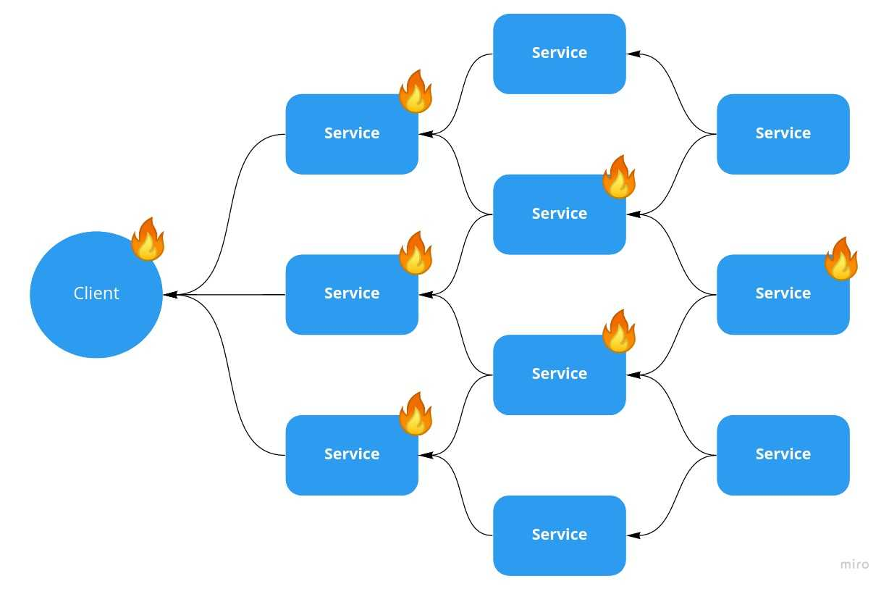

Projects & Samples of Work
Below are three featured samples from my work experience and co-op
terms.
1. Browser Cache Clearing Script
Description: A time-saving script that
automated the process of clearing browser caches across Chrome,
Firefox, and Edge. By scheduling this script, our analysts saved
around 10 hours per month previously spent manually clearing
caches during troubleshooting sessions.
Reflection: This project taught me how small
automations can make a huge impact on productivity. I improved
my scripting and troubleshooting skills while also gaining a
deeper appreciation for methodical testing.
2. IT Troubleshooting Procedures
Description: I created a comprehensive set of
documents that outlined step-by-step troubleshooting procedures
for common IT requests, including permission issues, server
access, and routine performance checks. This reference library
drastically improved onboarding for new analysts and maintained
a 95% SLA compliance.
Reflection: Documenting and streamlining these
procedures enhanced my communication skills and gave me valuable
insight into knowledge management. It highlighted the importance
of collaboration within a team and how clarity in documentation
can reduce repetitive tasks.
3. Health Check Service for Microservices

Description: During my internship at Toyota
Canada Inc., I developed a Java Spring Boot API to monitor the
health of 12 internal microservices. This system would
automatically create tickets for any failing microservice,
cutting detection and response times by 75%.
Reflection: Building this solution helped me
solidify my understanding of RESTful APIs, asynchronous
communication, and logging best practices. Seeing how a health
check can quickly pinpoint issues emphasized the importance of
proactive maintenance in large-scale systems.